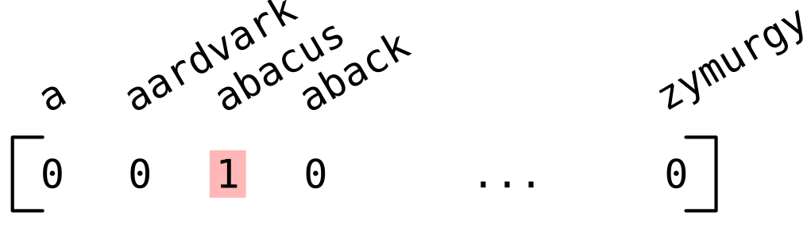
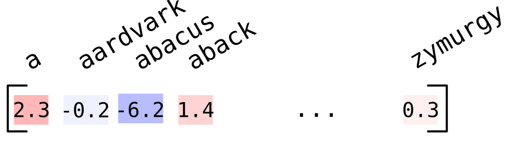

Lecture 2
SPC5004: Tools and Applications of Generative AI
Prof. Anthony E. Phillips
Friday, 25 September 2026
We interpret text input as a series of tokens.
These will use a one-hot representation: that is, each token is represented by a vector that has value 1 in the position corresponding to a particular token and 0 everywhere else.

Each vector will therefore have length equal to our total vocabulary size.
Each language model will have a different vocabulary and therefore a different approach to tokenisation.
UNKNOWN token but only want to use this as a last resort.Let’s see how this looks for a small model in the Qwen series.
[12522, 5193, 264]Our three words turn into three tokens.
Note that the space is included in the subsequent token: e.g., token number 264 apparently represents " a".
If we look at the raw vocabulary entries rather than the decoded text, that leading space is visible directly as a Ġ prefix:
For more on this sort of utility function, see https://huggingface.co/docs/transformers/v5.17.0/en/internal/tokenization_utils.
55320 --> DNA
13352 --> stands
369 --> for
409 --> de
60163 --> oxy
1897 --> rib
263 --> on
22147 --> ucle
292 --> ic
13621 --> acid
13 --> .Here the long word deoxyribonucleic is broken up into smaller tokens. Some (" de", "oxy") correspond to the semantic division of the English word, while others ("ucle") do not.
Interestingly, "DNA" is apparently common enough to be a token in its own right.
Tokenisers may also reserve tokens that indicate structure rather than a piece of text:
[PAD]: pads shorter sequences up to a common length so they can be batched together.[BOS]/[EOS] (or <s>/</s>): mark the beginning/end of a sequence.[CLS]: a summary token, often prepended so its final representation can be used for sequence-level classification.[SEP]: separates two distinct segments packed into the same input (e.g., two sentences).[MASK]: a placeholder for a hidden token, used when training masked language models.Not every tokeniser uses all of these — it depends on how the model was trained.
The output will be a vector of logits, a score for each possible token:

tensor([[[ 7.9062, 4.9062, 1.9688, ..., -4.5938, -4.6250, -4.6250],
[ 5.3438, 4.7812, 0.4473, ..., -6.3125, -6.3125, -6.3125],
[ 2.5156, 3.3281, 0.7422, ..., -6.4375, -6.4375, -6.4375]]],
dtype=torch.bfloat16)This is more interpretable as a probability. We can make this conversion using the softmax function:
tensor([1.6298e-07, 3.6694e-07, 2.7590e-08, ..., 2.1032e-11, 2.1032e-11,
2.1032e-11], dtype=torch.bfloat16)We can find the most likely continuation using argmax:
' time'To generate more than one token, we repeat this process: predict a next-token distribution, pick a token, append it, and feed the longer sequence back in.
Always picking the single most likely next token is called greedy search.
'Once upon a time, there was a man who was very rich. He had a lot'Greedy search is deterministic, but always taking the locally-best token can miss a better sequence overall, and tends to produce repetitive text.
Instead of always taking the maximum, we can sample from the predicted distribution.
'Once upon a time, I was so afraid of making a mistake that I never even tried'Looking only at the next token might lead us to discard the start of a useful sentence.
Beam search considers the \(n\) most promising partial sequences (“beams”) and expand them all, finally returning the highest-scoring complete sequence.
'Once upon a time, there was a young man named John. He lived in a small'git updatePlease go to https://github.qmul.ac.uk/ and check you can log in.
Otherwise, don’t worry about git for now; we will run a short tutorial as part of the labs next week, to help you begin compiling your code portfolio.